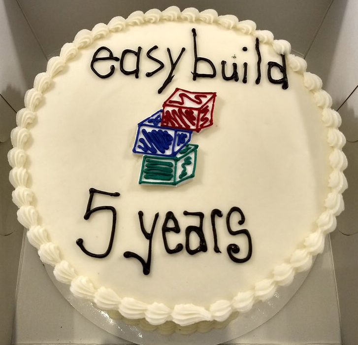

EasyBuild: building software with ease.
EasyBuild is a software build and installation framework that allows you to manage (scientific) software on High Performance Computing (HPC) systems in an efficient way.
A full list of supported software packages is available here.
Latest news
- 20190520 - EasyBuild v3.9.1 is available
- 20190129 - Recordings of 4th EasyBuild User Meeting available
- 20181010 - 4th EasyBuild User Meeting: Louvain-la-Neuve (Belgium), Jan 30th - Feb 1st 2019 - https://tiny.cc/eum19
- 20180426 - EasyBuild now has (experimental) support for generating Singularity container recipes & images!
- 20171113 - Happy 5th birthday (stable) EasyBuild!
- 20170705 - EasyBuild repositories have been migrated to https://github.com/easybuilders
- 20170425 - slides from EasyBuild tutorial at PRACE-VI-SEEM Spring School
- 20161128 - 2nd EasyBuild User Meeting: Feb 8-10 2017, Jülich
- 20161110 - pre-print of HUST-16 paper available
- 20160511 - CUG2016 paper: Making Scientific Software Installation Reproducible On Cray Systems Using EasyBuild
- 20160330 - EasyBuild tutorial from HPC Advisory Council Swiss conference
- 20160214 - RCE podcast on EasyBuild
- 20151117 - Presentation materials of SC'15 BoF session available
- 20150914 - 1st EasyBuild User Meeting - Jan 27-29 2016 (Ghent)
- 20141104 - Revamped documentation @ easybuild.readthedocs.io
- 20141020 - pre-print of HUST-14 workshop paper available
Documentation
Read the fine manual (RTFM!) at http://easybuild.readthedocs.io/.
Getting started
The recommended way of installing EasyBuild is via the documented bootstrap procedure. You should configure EasyBuild to behave as you prefer, subsequently.
That is all that is needed to get started with installing (scientific) software with ease. Take a look at the typical workflow example in the EasyBuild documentation that shows how to make EasyBuild build and install WRF with a single command.
Quick demo for the impatient
After installing EasyBuild, you can build and install HPL on top of a compiler toolchain that consists of open source components (GCC, OpenMPI, etc.) by running the following commands:
$ module load EasyBuild
$ export EASYBUILD_PREFIX=/tmp/$USER # example installation prefix
$ eb HPL-2.0-goalf-1.1.0-no-OFED.eb --robotThis should install a module file for HPL which you can load to start using it.
$ export MODULEPATH=$EASYBUILD_PREFIX/modules/all:$MODULEPATH
$ module load HPLFor more information on using EasyBuild, see the EasyBuild documentation.
Contact info
You can get in contact with the EasyBuild community in different ways:
Mailing list
An EasyBuild mailinglist easybuild@lists.ugent.be is available to subscribe to.
This list is used by both users and developers of EasyBuild, so if you have any questions or suggestions, you can post them there.
Only members can post to this mailinglist. To request membership, see https://lists.ugent.be/wws/info/easybuild.
IRC
An IRC channel #easybuild has been set up on the FreeNode network.
Just connect your IRC client to the chat.freenode.net server, and join
the #easybuild channel.
There is an IRC bot present (easybuilder). Just type !help to get
pointers to the available commands.
The EasyBuild team also has a Twitter feed: @easy_build.
Disclaimer
EasyBuild has mostly been used and tested on x86_64-based Linux systems (RedHat-based, Debian, SuSE, ...), but can be easily extended for other platforms. Limited provisions for other Unix-based operating systems (e.g., Mac OS X) are also available.
License
EasyBuild is developed by the High-Performance Computing team at Ghent University together with the members of the EasyBuild community, and is made available under the GNU General Public License (GPL) version 2.
Acknowledgements
EasyBuild was created with support of Ghent University, the Flemish Supercomputer Centre (VSC), the Flemish Research Foundation (FWO) and the Department of Economy, Science and Innovation (EWI).